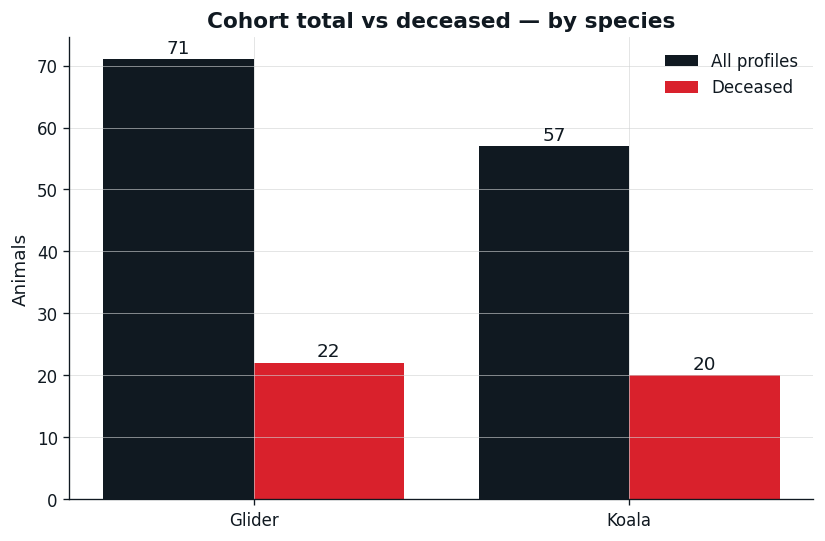
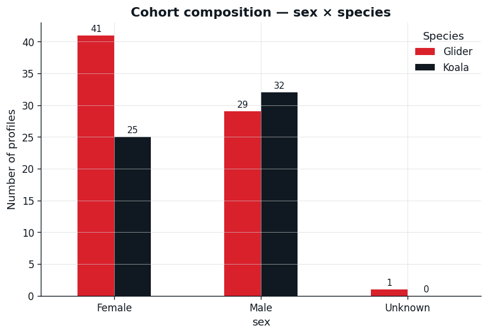
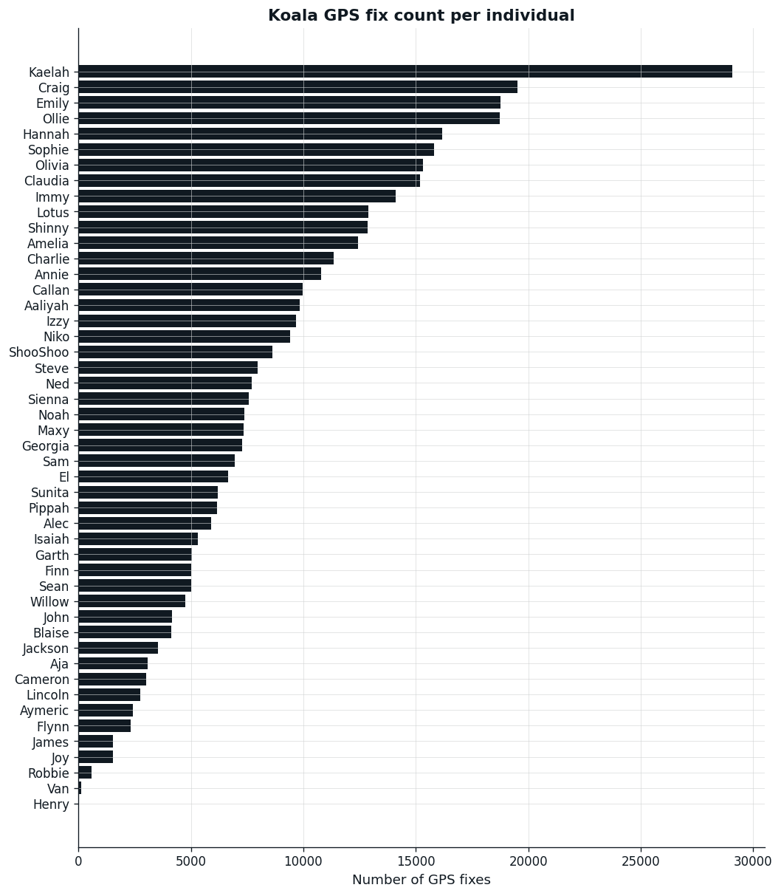
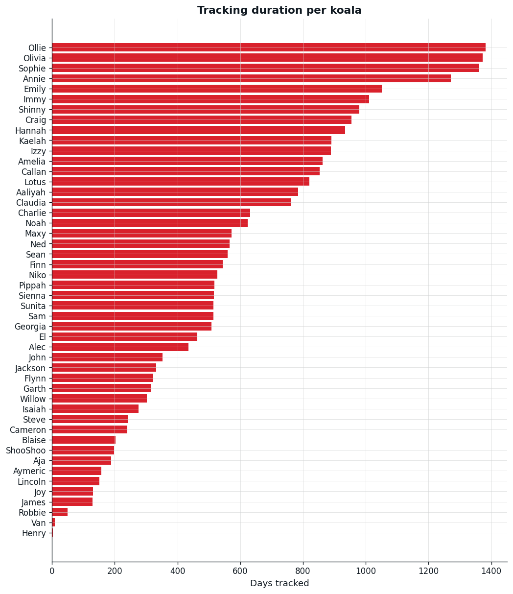
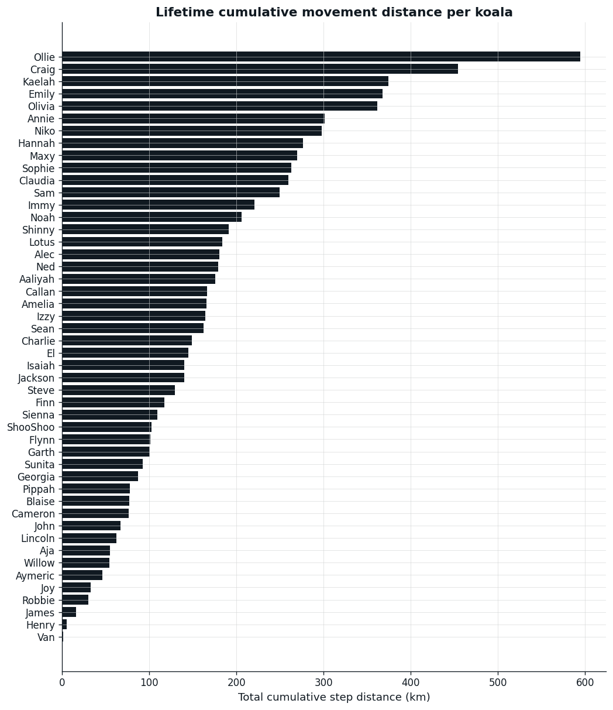
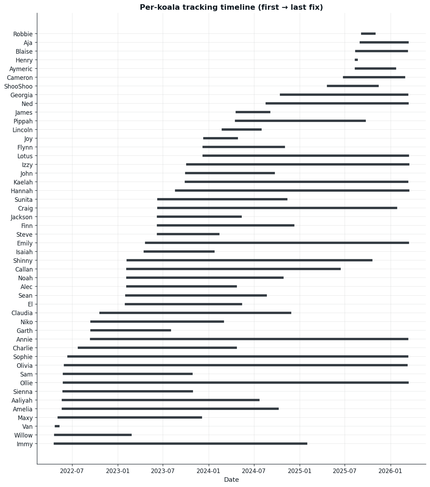
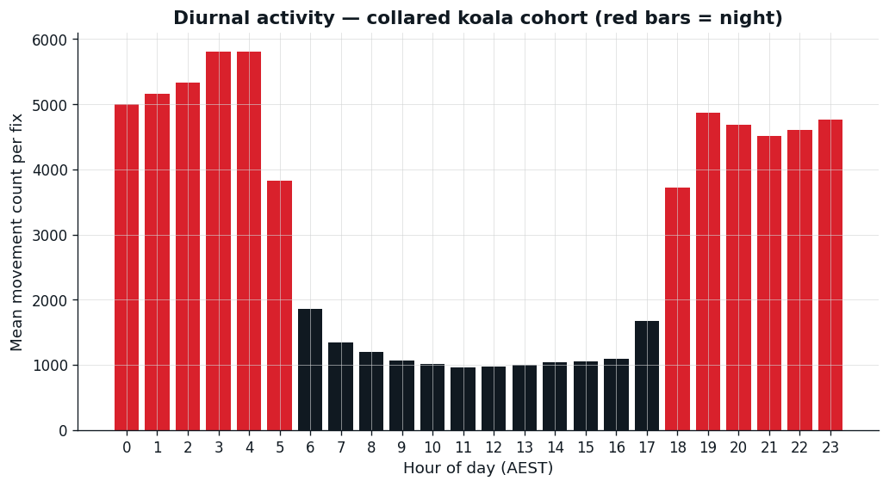
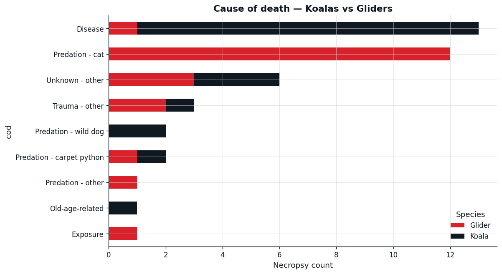
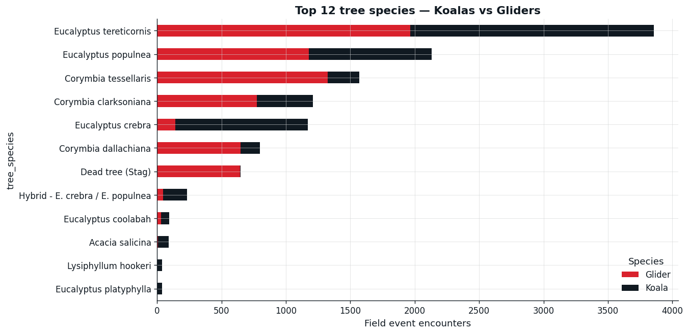

The monitoring program at Olive Downs covers both koalas and gliders. Only koalas wear GPS collars; everything we know about gliders comes from on-foot field events and vet records. This report breaks every dataset down by species.
Master interactive map
All koala tracks, MCP/KDE home ranges, plus mortality, profiles, and field events for both species. Toggle each species layer independently in the top-right.
How to read the two density heatmaps
The master map includes two separate heatmap layers because koalas and gliders are surveyed in fundamentally different ways:
- Koala density heatmap — built from the collar GPS fixes. Every ~2 hours a collared koala records its position automatically, so density here approximates how much time a koala spends in each location (free-ranging fixes only; the homestead and bad reads are filtered out). High density = a koala lived/rested there for many hours over weeks or months.
- Glider density heatmap — built from on-foot field events in the Field Events sheet (no GPS collars on gliders). Density here reflects where vets and field staff have encountered gliders — a function of both true glider abundance AND survey effort. High density = many recorded encounters, biased toward areas the team visits often (e.g. tracking transects, monitoring routes).
Don't compare the two intensities directly — they're produced by completely different sampling regimes. The koala layer is roughly proportional to time spent; the glider layer is proportional to encounters logged. They're both useful for spotting hotspots within their own species, but a "darker" patch on the glider map doesn't mean it has more gliders per hectare than the koala map has koalas per hectare.
Data quality & corrections
Raw collar exports contain several patterns that don't reflect real koala behaviour and would skew movement analysis if left untouched. The pipeline applies four corrections automatically:
- Degraded GPS fixes. Some collar reads are recorded with no HDOP/PDOP accuracy value and land far from where the koala otherwise was — classic single-satellite or cold-start fixes with hundreds of metres of error. The QC pass computes, for each fix, the median distance to its 4 nearest in-time neighbours; fixes more than 5 km from their neighbours are dropped as outliers. About 0.1% of fixes are removed this way.
- Implausible speeds. A koala walks at ~1 km/h and sprints at most 3–4 km/h. Step lengths implying sustained speeds above 5 km/h are treated as bad reads, not movement.
- Collar-offline gaps. When a collar is offline for hours or weeks, the next fix can be tens of kilometres away. Track LineStrings are split into segments wherever consecutive fixes are more than 12 hours apart, so an offline period doesn't draw a straight line across the map. The koalas with the most segmented tracks (Sean, Kaelah, Annie) had the most intermittent collar coverage.
- Handling sites (capture / vet / release). Koalas are physically transported to Iffley Homestead for vet exams and collaring. The collar keeps recording, so the GPS log includes positions at the homestead and the transport between. Fixes within 200 m of the homestead are flagged in the
at_handling_sitecolumn; they're kept as data points but excluded from step distance, daily distance, and home-range calculations, and tracks are broken on either side so we don't draw long radiating lines between habitat and the homestead. 42 of 49 collared koalas have at least one fix at Iffley (3,971 fixes total). Add more handling sites toHANDLING_SITESinanalysis/scripts/config.pyas you discover them.
After these corrections the dataset has ~402,000 free-ranging GPS fixes across 49 koalas, the maximum step length is ~5 km (down from 35 km in the raw data), and 99.9% of steps are under 520 m — consistent with how koalas actually move.
1. Species & cohort composition


2. Collared koala movement (GPS data — Koala only)





Figure: cohort-mean movement count by hour AEST. Koalas are crepuscular/nocturnal — the evening uplift is expected.
Per-koala summary table
| koala | n_rows | n_fixes | first_fix | last_fix | days_tracked | total_dist_km | mean_daily_dist_km | mean_step_m | median_step_m |
|---|---|---|---|---|---|---|---|---|---|
| Aaliyah | 56960 | 9839 | 2022-05-25 04:00:58+00:00 | 2024-07-17 20:00:40+00:00 | 784.7 | 175.63 | 0.224 | 17.9 | 6.9 |
| Aja | 15832 | 3088 | 2025-09-02 12:00:39+00:00 | 2026-03-09 22:01:32+00:00 | 188.4 | 54.64 | 0.290 | 17.7 | 8.2 |
| Alec | 32144 | 5907 | 2023-02-07 02:00:39+00:00 | 2024-04-17 20:00:17+00:00 | 435.7 | 180.42 | 0.414 | 30.5 | 7.5 |
| Amelia | 68671 | 12448 | 2022-05-24 03:05:12+00:00 | 2024-10-02 21:16:11+00:00 | 862.8 | 165.51 | 0.192 | 13.3 | 8.0 |
| Annie | 86146 | 10781 | 2022-09-15 02:01:10+00:00 | 2026-03-08 22:00:39+00:00 | 1270.8 | 301.48 | 0.237 | 28.0 | 8.4 |
| Aymeric | 8973 | 2410 | 2025-08-14 06:00:48+00:00 | 2026-01-17 21:30:16+00:00 | 156.6 | 45.90 | 0.293 | 19.1 | 9.6 |
| Blaise | 18253 | 4135 | 2025-08-16 02:01:18+00:00 | 2026-03-06 21:30:30+00:00 | 202.8 | 76.93 | 0.379 | 18.6 | 8.2 |
| Callan | 61843 | 9955 | 2023-02-08 02:28:04+00:00 | 2025-06-10 01:30:10+00:00 | 853.0 | 166.55 | 0.195 | 16.7 | 8.6 |
| Cameron | 19425 | 3000 | 2025-06-28 08:01:11+00:00 | 2026-02-23 22:00:48+00:00 | 240.6 | 76.12 | 0.316 | 25.4 | 8.0 |
| Charlie | 53167 | 11356 | 2022-07-28 02:00:56+00:00 | 2024-04-18 21:44:18+00:00 | 630.8 | 148.75 | 0.236 | 13.1 | 7.5 |
| Claudia | 66722 | 15174 | 2022-10-23 08:28:45+00:00 | 2024-11-23 06:00:39+00:00 | 761.9 | 259.69 | 0.341 | 17.1 | 7.4 |
| Craig | 84383 | 19537 | 2023-06-12 02:33:10+00:00 | 2026-01-22 01:00:56+00:00 | 954.9 | 454.08 | 0.476 | 23.2 | 9.6 |
| El | 34828 | 6661 | 2023-02-02 04:35:27+00:00 | 2024-05-09 20:00:48+00:00 | 462.6 | 144.65 | 0.313 | 21.7 | 9.5 |
| Emily | 88210 | 18771 | 2023-04-24 06:01:10+00:00 | 2026-03-10 21:00:14+00:00 | 1051.6 | 367.54 | 0.349 | 19.6 | 7.5 |
| Finn | 33379 | 5031 | 2023-06-10 08:01:42+00:00 | 2024-12-06 00:36:36+00:00 | 544.7 | 117.51 | 0.216 | 23.4 | 8.7 |
| Flynn | 24513 | 2334 | 2023-12-11 04:01:05+00:00 | 2024-10-28 20:00:58+00:00 | 322.7 | 101.43 | 0.314 | 43.5 | 11.1 |
| Garth | 25788 | 5049 | 2022-09-16 00:01:04+00:00 | 2023-07-28 04:00:48+00:00 | 315.2 | 100.86 | 0.320 | 20.0 | 7.8 |
| Georgia | 39435 | 7281 | 2024-10-17 10:00:40+00:00 | 2026-03-09 04:00:14+00:00 | 507.7 | 86.82 | 0.171 | 11.9 | 7.0 |
| Hannah | 75226 | 16172 | 2023-08-22 04:00:48+00:00 | 2026-03-13 07:00:39+00:00 | 934.1 | 276.29 | 0.296 | 17.1 | 7.8 |
| Henry | 252 | 32 | 2025-08-14 06:01:10+00:00 | 2025-08-16 20:00:47+00:00 | 2.6 | 5.01 | 1.941 | 161.8 | 7.2 |
| Immy | 79760 | 14093 | 2022-04-22 03:48:48+00:00 | 2025-01-26 22:00:48+00:00 | 1010.8 | 220.70 | 0.218 | 15.7 | 7.9 |
| Isaiah | 23972 | 5308 | 2023-04-19 04:00:58+00:00 | 2024-01-19 20:00:39+00:00 | 275.7 | 140.30 | 0.509 | 26.4 | 8.2 |
| Izzy | 58589 | 9681 | 2023-10-06 02:12:12+00:00 | 2026-03-13 00:00:40+00:00 | 888.9 | 164.08 | 0.185 | 17.0 | 7.6 |
| Jackson | 21786 | 3524 | 2023-06-11 08:51:10+00:00 | 2024-05-07 20:01:10+00:00 | 331.5 | 139.84 | 0.422 | 39.7 | 7.8 |
| James | 9874 | 1551 | 2024-04-23 02:01:18+00:00 | 2024-08-30 08:00:39+00:00 | 129.2 | 15.98 | 0.124 | 10.3 | 6.7 |
| John | 25580 | 4177 | 2023-10-02 02:00:40+00:00 | 2024-09-17 22:00:40+00:00 | 351.8 | 66.69 | 0.190 | 16.0 | 7.5 |
| Joy | 9539 | 1544 | 2023-12-14 06:01:18+00:00 | 2024-04-23 00:00:24+00:00 | 130.7 | 33.04 | 0.253 | 21.4 | 8.0 |
| Kaelah | 95641 | 29067 | 2023-09-30 08:55:04+00:00 | 2026-03-08 23:00:40+00:00 | 890.6 | 374.47 | 0.420 | 12.9 | 7.0 |
| Lincoln | 12808 | 2753 | 2024-02-26 10:00:39+00:00 | 2024-07-26 20:00:16+00:00 | 151.4 | 62.48 | 0.413 | 22.7 | 7.4 |
| Lotus | 54832 | 12890 | 2023-12-11 04:00:59+00:00 | 2026-03-10 23:00:16+00:00 | 820.8 | 183.79 | 0.224 | 14.3 | 8.9 |
| Maxy | 43858 | 7362 | 2022-05-07 02:00:39+00:00 | 2023-11-30 18:00:39+00:00 | 572.7 | 269.77 | 0.471 | 36.6 | 8.4 |
| Ned | 41912 | 7714 | 2024-08-21 07:20:31+00:00 | 2026-03-09 22:01:18+00:00 | 565.6 | 178.82 | 0.316 | 23.2 | 8.2 |
| Niko | 44298 | 9403 | 2022-09-16 04:00:39+00:00 | 2024-02-25 20:00:48+00:00 | 527.7 | 297.62 | 0.564 | 31.7 | 8.2 |
| Noah | 46378 | 7385 | 2023-02-07 07:09:10+00:00 | 2024-10-22 19:00:16+00:00 | 623.5 | 205.84 | 0.330 | 27.9 | 8.1 |
| Olivia | 87483 | 15314 | 2022-06-02 06:00:40+00:00 | 2026-03-05 16:00:26+00:00 | 1372.4 | 361.44 | 0.263 | 23.6 | 6.9 |
| Ollie | 103498 | 18722 | 2022-05-28 04:00:48+00:00 | 2026-03-09 21:00:19+00:00 | 1381.7 | 594.43 | 0.430 | 31.8 | 7.3 |
| Pippah | 37762 | 6179 | 2024-04-19 04:00:48+00:00 | 2025-09-18 00:41:35+00:00 | 516.9 | 77.99 | 0.151 | 12.6 | 8.1 |
| Robbie | 3761 | 597 | 2025-09-08 11:21:32+00:00 | 2025-10-28 12:01:18+00:00 | 50.0 | 30.18 | 0.603 | 50.6 | 9.5 |
| Sam | 41255 | 6957 | 2022-05-28 04:01:04+00:00 | 2023-10-23 22:01:48+00:00 | 513.8 | 249.76 | 0.486 | 35.9 | 7.3 |
| Sean | 31733 | 5019 | 2023-02-03 22:00:22+00:00 | 2024-08-16 02:00:58+00:00 | 559.2 | 162.03 | 0.290 | 32.3 | 8.3 |
| Shinny | 66185 | 12849 | 2023-02-08 22:01:21+00:00 | 2025-10-15 09:00:17+00:00 | 979.5 | 191.00 | 0.195 | 14.9 | 7.9 |
| ShooShoo | 27115 | 8619 | 2025-04-24 14:00:40+00:00 | 2025-11-08 17:25:58+00:00 | 198.1 | 102.49 | 0.517 | 11.9 | 7.3 |
| Sienna | 41258 | 7573 | 2022-05-27 06:00:48+00:00 | 2023-10-24 22:00:40+00:00 | 515.7 | 109.19 | 0.212 | 14.4 | 8.0 |
| Sophie | 101279 | 15815 | 2022-06-16 12:00:39+00:00 | 2026-03-09 01:00:48+00:00 | 1361.5 | 263.26 | 0.193 | 16.6 | 6.9 |
| Steve | 39949 | 7977 | 2023-06-10 08:00:48+00:00 | 2024-02-07 16:00:48+00:00 | 242.3 | 129.75 | 0.535 | 16.3 | 0.1 |
| Sunita | 38111 | 6207 | 2023-06-13 00:00:48+00:00 | 2024-11-08 01:00:48+00:00 | 514.0 | 92.65 | 0.180 | 14.9 | 7.7 |
| Van | 762 | 118 | 2022-04-27 02:01:28+00:00 | 2022-05-06 18:00:40+00:00 | 9.7 | 1.56 | 0.162 | 13.4 | 7.7 |
| Willow | 27552 | 4753 | 2022-04-24 04:00:18+00:00 | 2023-02-20 00:00:55+00:00 | 301.8 | 54.29 | 0.180 | 11.4 | 7.1 |
3. Health & mortality — both species

Cat predation and disease dominate across both species, with carpet python predation accounting for several glider deaths and a couple of koalas.
4. Tree use — both species

Koalas favour Eucalyptus tereticornis, E. populnea and E. crebra. Gliders use a broader mix including Corymbia species and hollow-bearing trees.
5. Behaviour modes & report reasons
Behaviour modes in the GPS data are koala-only — gliders have no collars.
Codes like BM_KOALA_BEACON_CLOSE_INTERACTION flag collar-to-collar
RF proximity events between koalas.
6. Fence interactions
fence_dist values are 100,000 m
(the sentinel for "no active virtual fence"). The fence-distance feature was never
deployed during this monitoring period.Known data caveats
Issues found during the data audit. None affect the core movement/home-range outputs; they're listed so anyone reading the report knows what's behind the numbers.
- Beacon-detection records are mixed into the GPS schema with column overloading (the "Latitude" column carries the partner collar's device UID, "Longitude" carries the RSSI). The pipeline now parses these separately into
outputs/tables/beacon_detections.csv(268 events) andbeacon_pairs.csv(148 unique pairs). See the dashboard's Social network section for the resulting network. - ~59,000 aggregate beacon-mode events (
BM_KOALA_BEACON_NEAR / HEARD / CLOSE_INTERACTION) are also recorded but don't identify the partner koala — they just tell us a koala detected some nearby collar. Useful as a proximity-event indicator but not for building a network. - Post-death GPS fixes: 11 of 21 deceased koalas show fixes after their recorded
date_death. In every case except one, the late fixes are the recovered collar continuing to transmit from Iffley Homestead until manually deactivated, plus small carcass-displacement movements (32–231 m). The exception is Craig, with 357 free-ranging fixes covering 4.7 km over 58 days post-death — needs vet-team confirmation thatdate_deathis correct (or the collar wasn't redeployed). Full audit inoutputs/tables/post_death_audit.csv. - Nico (glider, carpet python predation, 2026-02-08) has a profile
date_deathbut no matching necropsy record — 1 of 42 deaths unaccounted for in the Necropsies sheet. - 67 field events have no Auto Easting/Northing (0.5% of 13,472). Mostly Capture / Release events — coordinates likely just not recorded at the time.
- One placeholder record in Field Events: an animal literally named "Koala" appears with three sexes recorded. Almost certainly a test record, not a real individual.
7. Coordinate reference
GPS collar data is in WGS84 (EPSG:4326). Field events come in GDA94/GDA2020 MGA Zone 55 (EPSG:7855) easting/northing — the pipeline projects both into a common WGS84 frame for mapping, and uses EPSG:7855 for area calculations.